Model Predictive Control Professional Plus function block application examples
The MPCPlus function block and DeltaV PredictPro can be used to address multivariable control requirements. You can use the PredictPro application to create process models and control definitions from process data. The automated test feature of the PredictPro application allows the step response of Controlled or Constraint outputs to be determined based on changes in the Manipulated inputs. This capability can meet multivariable control requirements in all process industries. In many cases, the MPCPlus function block can replace control techniques that have traditionally been used to address the control requirements of multivariable processes.
The MPCPlus function block can replace traditional MPC because implementation and commissioning of the MPCPlus function block are simpler and faster. Applications that can benefit from MPCPlus control can be identified based on your process knowledge. Consider using the MPCPlus block if:
- The process inputs and outputs are highly interactive.
- The number of Manipulated parameters can be smaller or larger than the number of Controlled and Constraint parameters.
- The process operation is subject to many constraints (MV, CV, AV).
- Robust operation with one or more failures on CV, AV or MV is required.
- Controller tuning or adjustment is desired during online operation.
- Operating profit from energy and feedstock savings and improved product quality is expected.
When planning an MPCPlus application verify that the execution time for the assumed configuration satisfies process control requirements.
To show how MPCPlus can be applied to the control of a multivariable
process, we will consider as an example, an oil fractionator process. This
problem has been published by Shell and includes typical process dynamics with
normalized inputs and outputs. In this example, it is assumed that the heat
requirement of the column enters with the feed. The column has three product
draws and three side circulating loops that remove heat to achieve the desired
product separation. The heat duty associated with the bottom loop can be
adjusted. The heat duty of the other recirculating loop can be measured but is
determined by other parts of the plant. The specification for the top and side
draws are determined by economics and operating requirements. There is no
product specification for the bottom draw but there is an operating constraint
on the temperature in the lower part of the column. The following figure shows
the process.
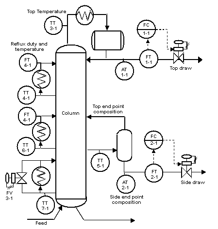
From a control perspective, the process inputs and outputs can be
visualized in the following manner based on the process design, available
measurements, and operating requirements.
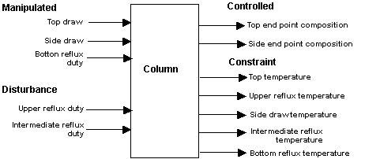
The MPCPlus block must be in a module by itself since it is designed to run in an Application Station. The MPCPlus block can externally reference the measurements and control loops in other control loops.
The complete configuration of the MPCPlus block is shown in the
following figures. The setpoint limits are based on the normalized range in
this example. In an actual application, these limits should be set in
engineering units based on the actual range of the measurements and
actuators.
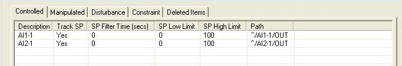
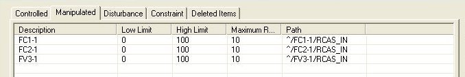
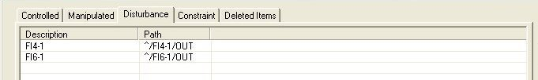
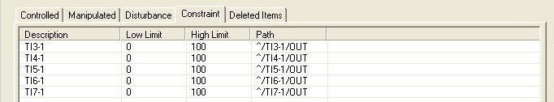
After this module is downloaded, launch the DeltaV PredictPro application to commission and test the control. The PredictPro application can be launched from the Start menu or by right-clicking the MPCPlus block The following figure shows the main screen of the PredictPro application as launched from the example MPCPlus block.
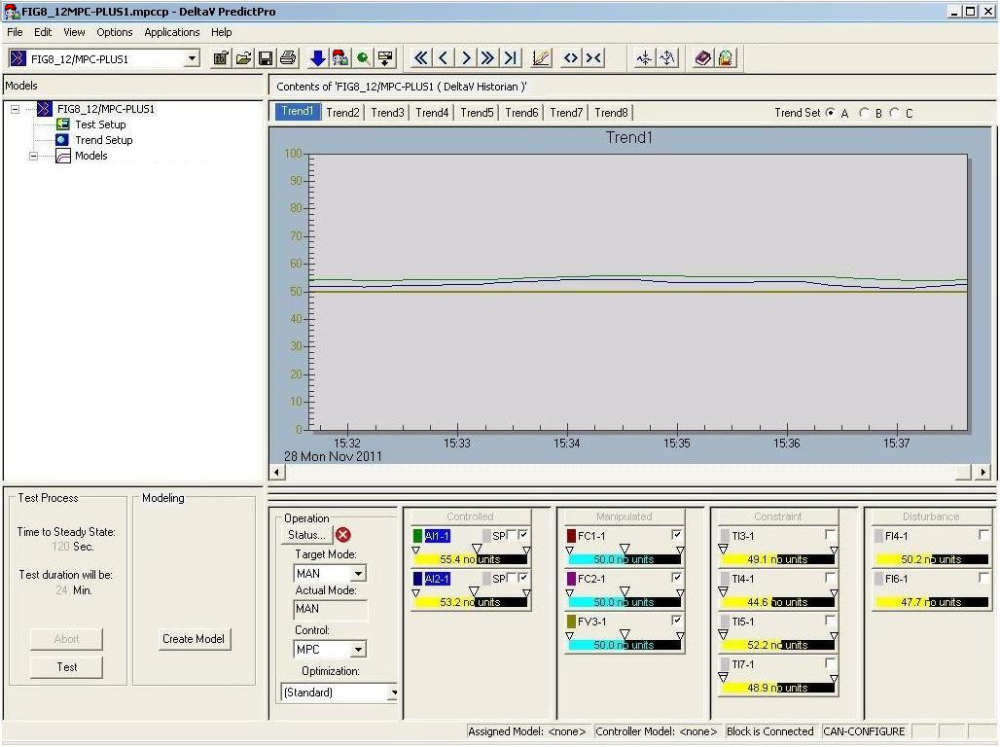
Based on the MPCPlus block configuration, the Control, Manipulated, Constraint, and Disturbance parameters are automatically displayed. Notice that the Description that was configured for each of these parameters is used in the faceplate representation. For this example, the Control selection has already been changed from Local to MPC which forced the downstream blocks to automatically change their target mode to RCAS. Thus, the mode of the MPCPlus block is MAN. Also, notice that some parameters are being trended. This is accomplished by clicking the faceplate check box for the parameter to be plotted.
By selecting the Setup button, the Manipulated parameters that are included in the test can be selected, as shown below.
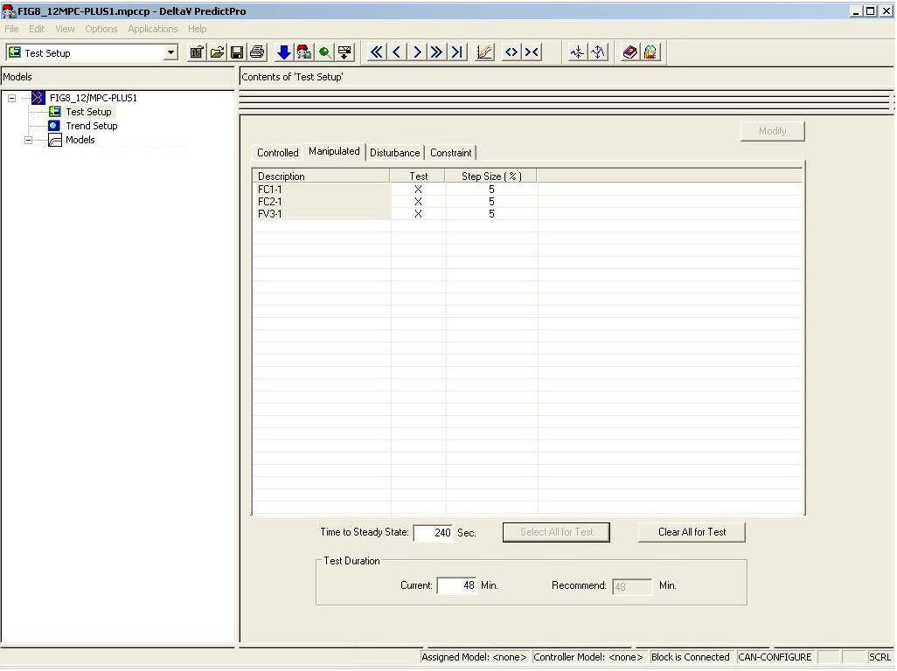
In this example, all the Manipulated parameters have been chosen for use in the automated test. Click the Select All for Test button to include all parameters. The default step size of 5 percent will be used in the test. Since all process outputs and disturbances are to be identified (the default selection), nothing more must be done in the setup other than to specify an estimated Time to Steady State. For this example, the time response of the simulated process has been time-scaled and the estimated Time to Steady State is input. Return to the application's top level view, and click the Test button to run the test. In response, the Manipulated parameters are automatically changed in a pseudo-random manner with the selected step size as shown in the following figure.
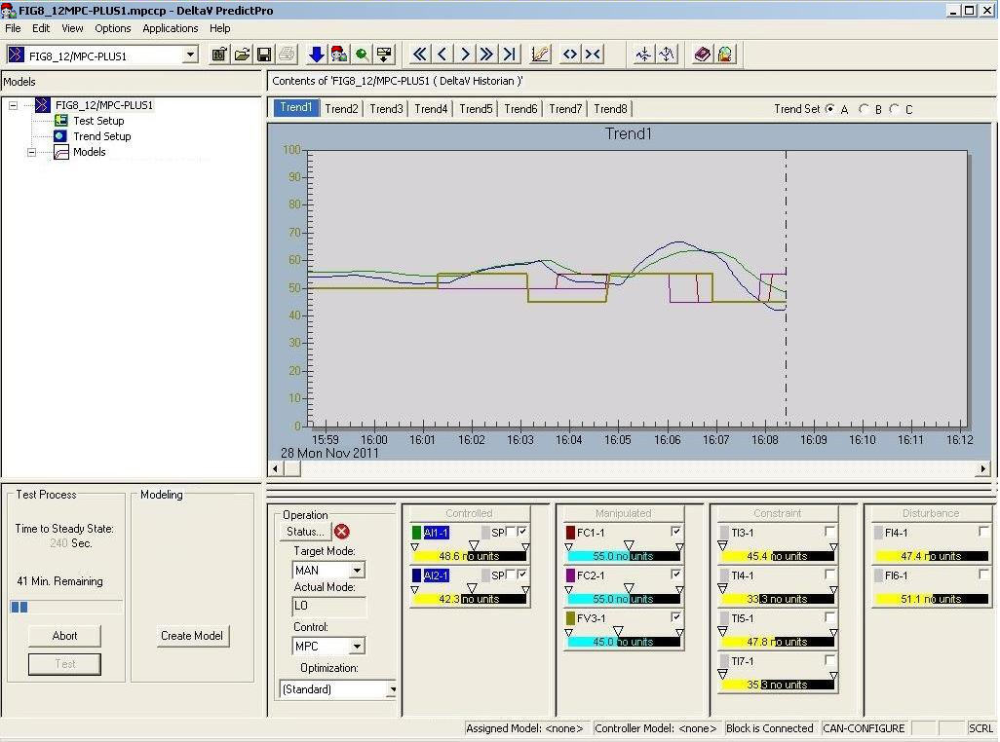
When the automated test is complete, the area of testing is automatically selected as shown in the following figure.
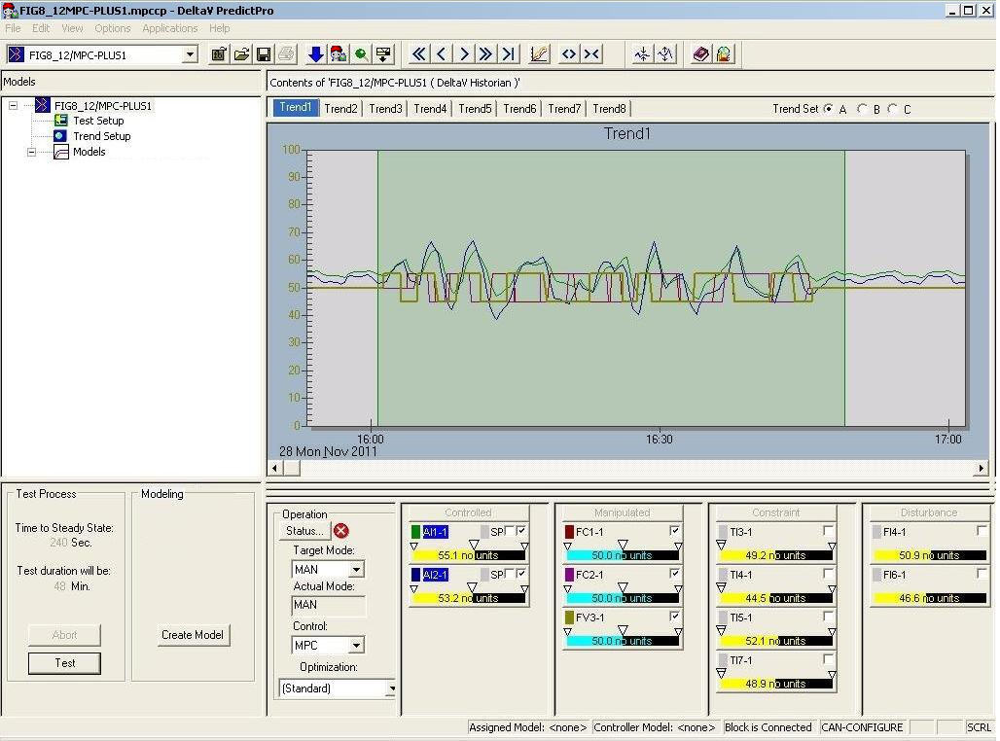
Since the process operation during the time of test was normal, all the test data will be used to generate the model. Thus, by selecting the Autogeneration button, the model and controller for the process is generated. Verification of the set response is shown below. For purposes of this example, the process response has been scaled by a factor of 100.
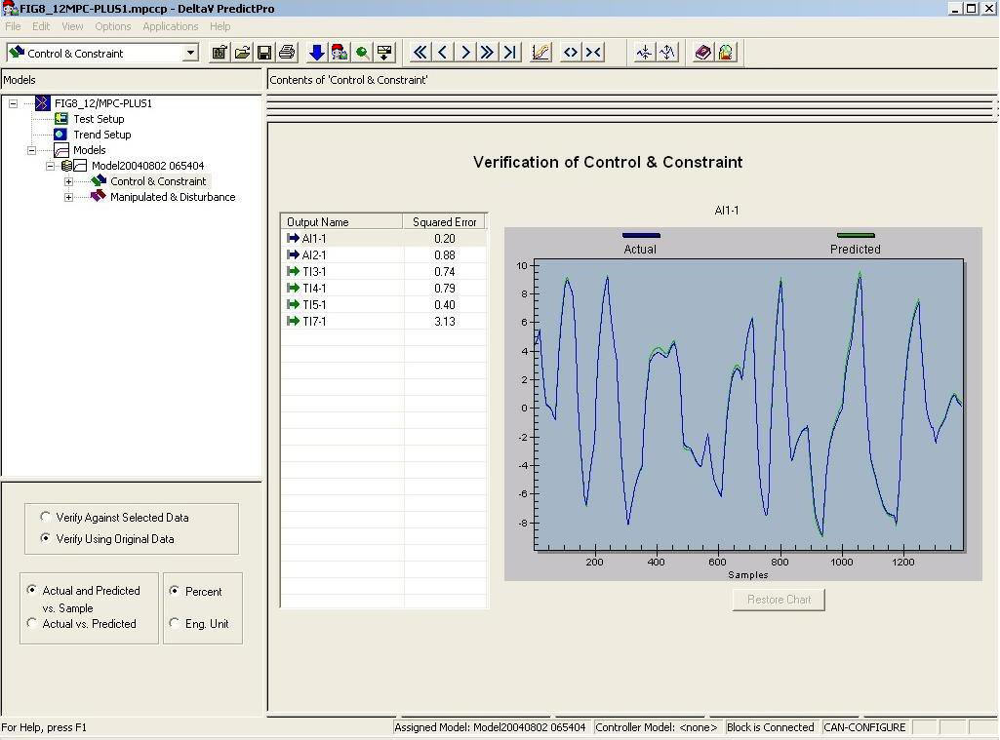
Based on the square errors indicated in the verification, the model can be accepted or rejected. Further verification of the model can be done by examining each step response and comparing this to your knowledge of the process. An example of the Top End Point Composition is shown in the following figure.
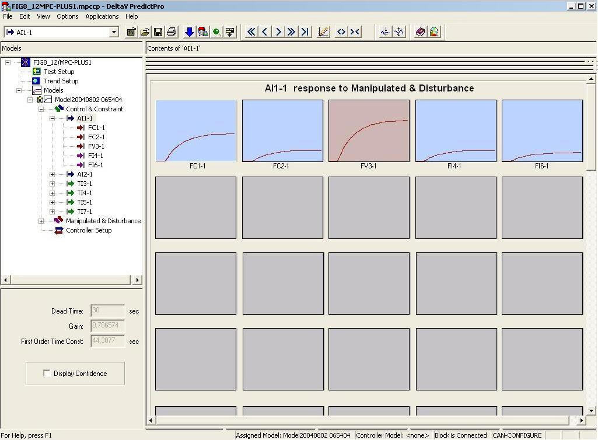
Also, further confirmation of the model can be done by comparing the FIR response to the ARX response and examining the confidence interval for one of the step responses as shown in the following figure. Select to use this command.
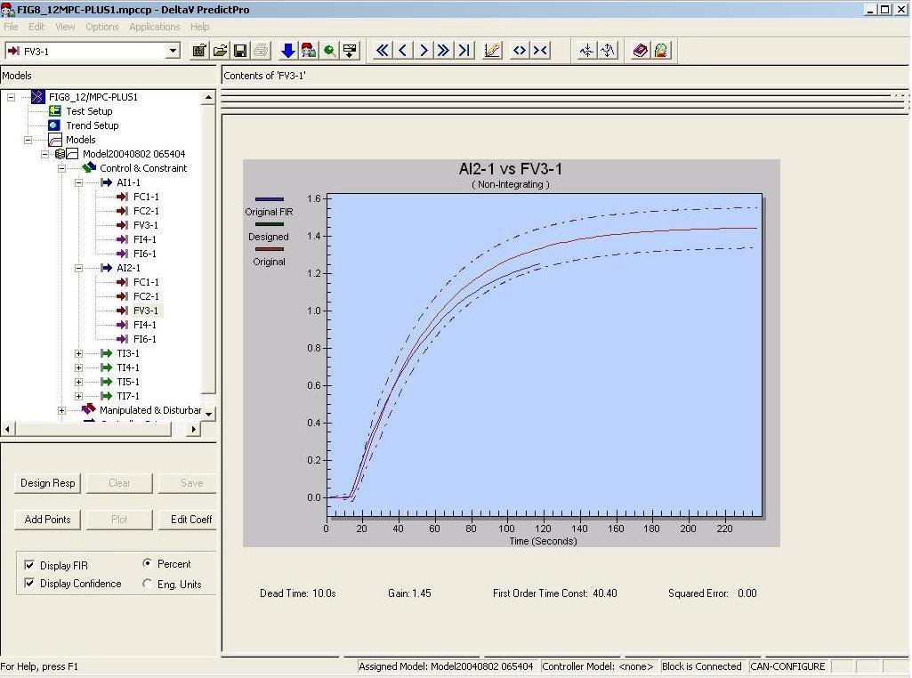
The Standard objective function, provided as the default for MPCPlus LP optimizer, can be used without modification for many applications. This default objective function is designed to provide control action that maintains the Control parameters at setpoint while maintaining the constraint parameters within their operating limits. When there are extra degrees of freedom for example, the number of Manipulated parameters exceed the number of Controlled parameters as in this example, the control action attempts to maintain the current position of the Manipulated parameters. If there is a conflict in satisfying the constraints and operating range, then the requirement to maintain Control or Constraint parameters within their limits or control range is relaxed for those with the lowest priority so that the remaining Control and Constraint parameters can be maintained within limits. For this application, the Standard objective function can be used. However, under certain market conditions, it can be desirable to maximize the top draw while maintaining the composition. Thus, a second objective function can be defined by selecting . The following image shows the Configure Multiple Objective Functions dialog.
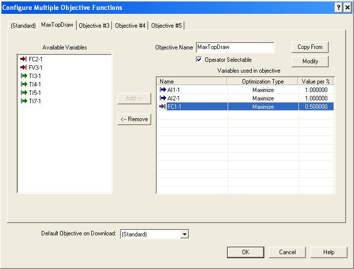
In this case, the dollar profit associated with a percent change in the top and side end point composition and the top draw flow are not known or can change daily. Thus, the unit cost that is provided is used to indicate the relative value of maintaining composition versus maximizing top draw. For this objective, an objective name of MaxTopDraw is defined. Click the Operator Selectable check box for this objective to be available to the operator. Once any objectives have been defined, it is important to download the module to use these new objective functions in simulation and in online operation.
To test the column control offline, select the model in the left pane and click the Simulate button. This command is available if you have selected . The following figure shows the Simulate interface for the example MPCPlus block when MPCPlus is in Automatic mode and the Standard objective function has been selected.
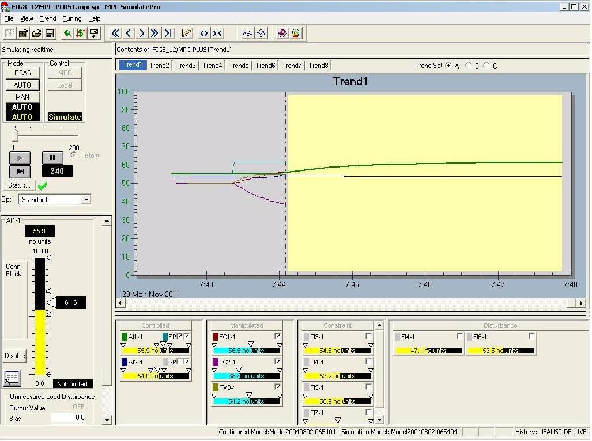
You can observe the control responses by changing the setpoint. You can also change the control objective to examine the impact on the process. For example, the impact of changing the objective from Standard to MaxTopDraw is reflected in the trend as shown in the following figure.
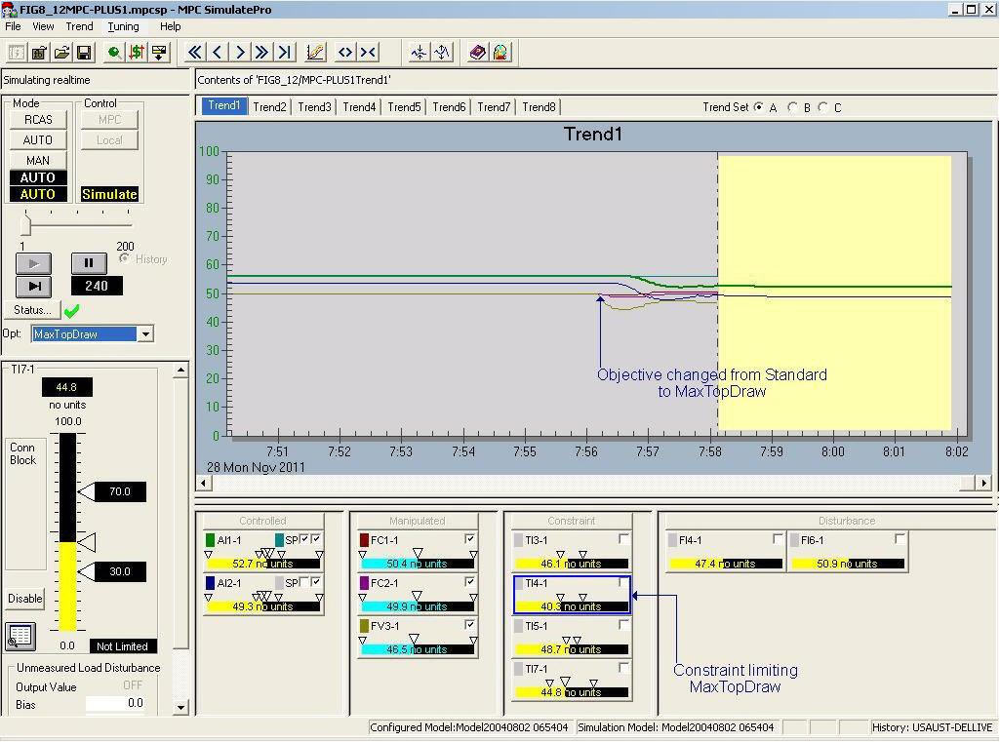
Once the MPCPlus control has been verified using PredictPro's simulation environment, the module containing the MPCPlus block can be put into service. The predefined dynamos for PredictPro can be included in the Operator Interface. The following figure shows an MPCPlus Operate view for this example.
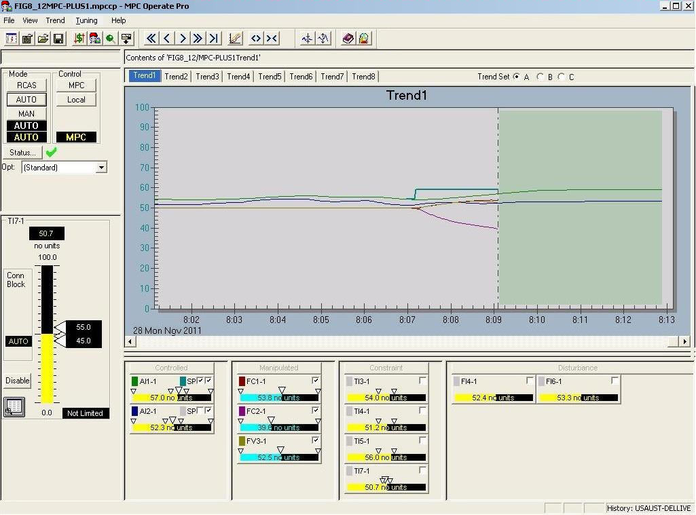